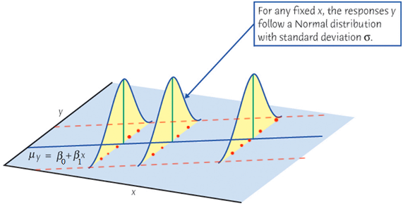

Regression Diagnostics - Linearity ⏯
MATH 4780 / MSSC 5780 Regression Analysis
Detecting Nonlinearity (CIA Example)
- Scatterplot \(y\) against each \(x\) can be misleading! It shows the marginal relationship between \(y\) and each \(x\), without controlling the level of other regressors.

Detecting Nonlinearity: Residual Plots
Care about the partial relationship between \(y\) and each \(x\) with impact of other \(x\)s controlled.
Residual-based plots are more relevant in detecting the departure of linearity.
- Residual plots cannot distinguish between monotone and non-monotone non-linearity.
- The distinction:
- Monotone: just transform \(x\) to \(x^2\)
- Non-monotone: need quadratic form

Bulging Rule for Simple Monotone Nonlinearity
| The bulge points | Transform | Ladder of powers/roots |
|---|---|---|
| left | \(x\) | down, e.g., \(\log(x)\) |
| right | \(x\) | up |
| down | \(y\) | down |
| up | \(y\) | up |
- Prefer to transform an \(x\) rather than \(y\), unless we see a common pattern of nonlinearity in the partial relationships of \(y\) to many \(x\)s.

Transformation on \(x\)s
gdptolog(gdp)healthtohealth + health^2

R Lab PRESS and Deleted Residuals
press <- function(model) {
e <- residuals(model)
h <- hatvalues(model)
e_press <- e / (1 - h)
PRESS <- sum(e_press^2)
y <- model.response(model.frame(model))
SST <- sum((y - mean(y))^2)
R2_pred <- 1 - PRESS / SST
c(PRESS = PRESS,
R2_pred = R2_pred,
RMSE_LOOCV = sqrt(mean(e_press^2)))
}
rbind(
Original = press(logciafit),
Corrected = press(logciafit2)
) PRESS R2_pred RMSE_LOOCV
Original 50.8 0.677 0.616
Corrected 26.4 0.832 0.443
R Lab Plotting against Original Untransformed \(x\)
Code
library(effects)
par(mar = c(2, 2, 0, 0))
plot(Effect("gdp", logciafit2, residuals = TRUE),
lines = list(col = c("blue", "black"), lty = 2),
axes = list(grid = TRUE), confint = FALSE,
partial.residuals = list(plot = TRUE, smooth.col = "magenta",
lty = 1,
span = 3/4),
xlab = "GDP per Capita", ylab = "Partial Residual", main = "", cex.lab = 2)
Code
par(mar = c(2, 2, 0, 0))
plot(Effect("health", logciafit2, residuals = TRUE),
lines = list(col = c("blue", "black"), lty = 2),
axes = list(grid = TRUE), confint = FALSE,
partial.residuals = list(plot = TRUE, smooth.col = "magenta",
lty = 1,
span = 3/4),
xlab = "Health Expenditures", ylab = "Partial Residual", main = "", cex.lab = 2)